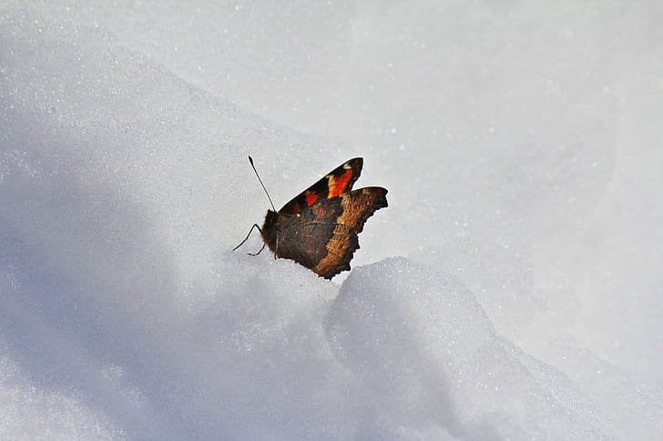

Butterflies are beautiful species which can be seen in various sizes, colours and patterns.
In Europe there are mainly 6 different butterfly families.
They are Hesperiidae, Papilionidae, Pieridae, Riodinidae, Lycaenidae & Nymphalidae.
No flying in winter
Surprisingly butterflies cannot fly if it is very cold. Perhaps that explains why we cannot see
them during the winter months.They need to ensure that they have a high body temperature if
they want to fly. Accoding to scientic sources their body temperatures need to be above 86 degrees.
Sunlight is very important for butterflies. They usually warm up by lazing in the sun. Their wings have
small capillaries which heats up their veins and eventually the heat is distributed throughout their body.

Butterfly eggs
Female butterflies produce a sticky fluid tha works like a glue. They use this to attach their eggs to the leaf.
Once attached they no longer stay there to care for their young. However, they are very careful in choosing the correct
plants.This is to make sure that the caterpillars will have plenty to eat from the plants when the eggs hatch.